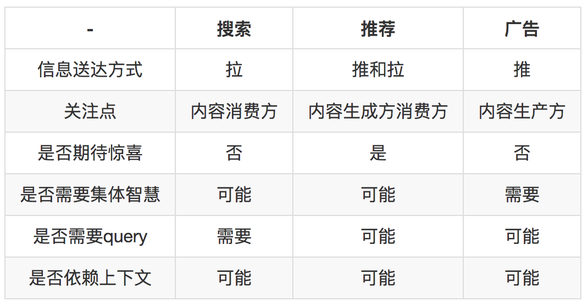
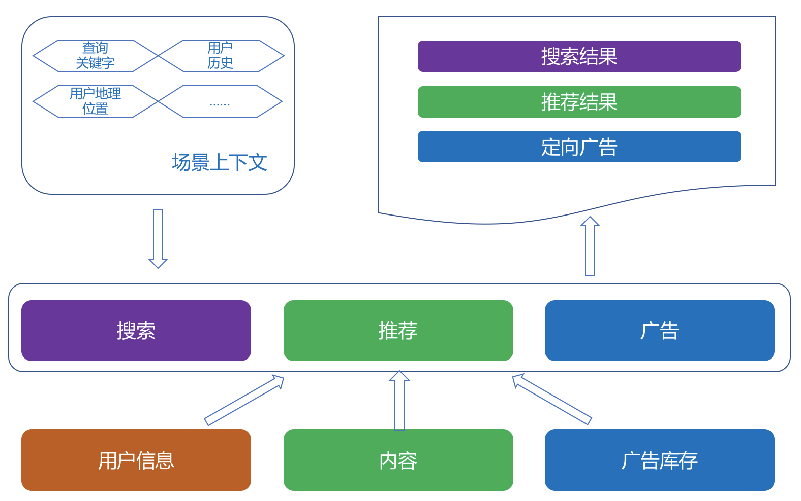

- 00 开篇词 用知识去对抗技术不平等.md
- 01 你真的需要个性化推荐系统吗_.md
- 02 个性化推荐系统有哪些绕不开的经典问题？.md
- 03 这些你必须应该具备的思维模式.md
- 04 画鬼容易画人难：用户画像的“能”和“不能”.md
- 05 从文本到用户画像有多远.md
- 06 超越标签的内容推荐系统.md
- 07 人以群分，你是什么人就看到什么世界.md
- 08 解密“看了又看”和“买了又买”.md
- 09 协同过滤中的相似度计算方法有哪些.md
- 10 那些在Netflix Prize中大放异彩的推荐算法.md
- 11 Facebook是怎么为十亿人互相推荐好友的.md
- 12 如果关注排序效果，那么这个模型可以帮到你.md
- 13 经典模型融合办法：线性模型和树模型的组合拳.md
- 14 一网打尽协同过滤、矩阵分解和线性模型.md
- 15 深度和宽度兼具的融合模型 Wide and Deep.md
- 16 简单却有效的Bandit算法.md
- 17 结合上下文信息的Bandit算法.md
- 18 如何将Bandit算法与协同过滤结合使用.md
- 19 深度学习在推荐系统中的应用有哪些_.md
- 20 用RNN构建个性化音乐播单.md
- 21 构建一个科学的排行榜体系.md
- 22 实用的加权采样算法.md
- 23 推荐候选池的去重策略.md
- 24 典型的信息流架构是什么样的.md
- 25 Netflix个性化推荐架构.md
- 26 总览推荐架构和搜索、广告的关系.md
- 27 巧妇难为无米之炊：数据采集关键要素.md
- 28 让你的推荐系统反应更快：实时推荐.md
- 29 让数据驱动落地，你需要一个实验平台.md
- 30 推荐系统服务化、存储选型及API设计.md
- 31 推荐系统的测试方法及常用指标介绍.md
- 32 道高一尺魔高一丈：推荐系统的攻防.md
- 33 和推荐系统有关的开源工具及框架介绍.md
- 34 推荐系统在互联网产品商业链条中的地位.md
- 35 说说信息流的前世今生.md
- 36 组建推荐团队及工程师的学习路径.md
- 加餐 推荐系统的参考阅读.md
- 结束语 遇“荐”之后，江湖再见.md
26 总览推荐架构和搜索、广告的关系
在数字世界中，信息过载是必然的，应对信息过载重担先后交给了两种主要形式，包括以搜索为代表的各种主动寻找信息的形式，以及以推荐为代表的各种被动接受信息的形式。
三种信息获取方式
当用户想要从浩如烟海的网页中，找到对自己有用的信息，首选当然是搜索引擎，这是属于“已知的未知”需求，剩下的“未知的已知”和“未知的未知”则需要推荐系统去满足，只是推荐系统常常会出现画蛇添足去满足“已知的已知”这样的伪需求。
另外介于两者之间，还有一种商业化解决信息触达问题，就是广告系统。在线广告从条幅广告，到搜索广告再到社交精准广告，也逐渐形成了一个理念就是：把广告当成一种有用的信息去找到最需要它的人。
三者都是解决信息过滤问题的，那么它们有没有一些共同之处呢？答案是肯定的，这三者的确有共同之处，但是也有不同之处。
三者对比
搜索，推荐和广告本质上都在解决信息过载的问题，各自解决的手段、目标不相同，各自诞生在产品生命周期不同阶段，以至于系统实现也不尽相同。
我们从几个维度对比一下，看看它们不同和相同在哪。

搜索更关注内容消费者，搜索要解决的是精确快速找到想要的结果，最重要的目标是降低延迟和提高相关性。搜索引擎是一个效率工具，希望用户找到信息越快越好，而不是希望用户沉迷在搜索引擎中。
所以搜索一般不会像信息流产品那样变成时间杀手，不过现在有些搜索引擎会主推信息流，这个另当别论。
人们需要依赖搜索而不沉迷搜索，这就与搜索引擎的目标有关。在搜索解决用户的信息获取需求时，惊喜并不在考虑范围内，因此就不会随随便便地利用集体智慧去扩充一些不那么直接相关的结果。
推荐系统则不同，首先传统的推荐系统大都是起一个“锦上添花”的作用，一般很少会将其作为核心功能来承载产品。
由于推荐系统通常的目标不是帮用户找到相关内容，而是希望用户消费内容，消费越多越好，于是业界逐渐演变出一个比较畸形的认识，“好的推荐系统应该变成一个时间杀手，让用户走进去就不想出来”才是最好的。
推荐系统不同于搜索引擎，用户使用搜索时目标明确，而使用推荐系统往往总会漫无目的，这样一来，在推荐结果中就有很多发挥的余地，可以给用户制造一些惊喜，或者让推荐结果呈现多样性，这一点和搜索很不一样。
另外，搜索是针对个人用户的，一个用户发起一个请求，而推荐系统既可能针对单个用户进行推荐，也可能针对用户群进行推荐。
推荐和搜索除了这些不同，还有更多的是相同点。基于内容的推荐，本质上就是一个小的搜索引擎。
实际上很多推荐引擎底层的技术实现，尤其是数据存储上大量借鉴了搜索相关技术，比如使用用户的兴趣标签召回推荐结果，就需要先对推荐候选池按照兴趣标签建立倒排索引，从而检索出候选集。
最后，广告是一个很特殊的存在，前面也说了，搜索和推荐都是为人找信息，而广告是为信息找人。但它在形式上又像推荐，总是“不请自来”，在技术实现上又兼有推荐和搜索两者特点。
而且它背后包含的是纯粹的商业目标，说白了就是和广告的计费方式有关，如果按照展现次数计费，系统就是要多做展现。
如果按照点击付费，那么就是想办法消耗光广告主的充值，所以广告系统关注的是商业利益最大化，精准和相关都不是终极目的，只是其中的一个手段。
架构抽象
我们抽象一下三者的需求共性：本质上都是在匹配，匹配用户的兴趣和需求（看成context），但匹配的目标，条件和策略不尽相同。示意图如下：

我们再进一步抽象下去，又可以分为三步：过滤候选、排序候选、个性化输出。
1.过滤候选
过滤候选这一步在搜索里天经地义，从查询关键字中解析得到查询意图，以及结构化的搜索条件，再用结构化的查询条件从倒排索引中检索出排序候选。
与之相似的是广告系统，搜索广告也是查询关键字去检索候选广告，而联盟广告则是拿着用户标签去需求方获取广告候选。
在推荐系统中，我之前一再强调有挖掘、召回和排序三个阶段，其中的召回阶段就是过滤候选阶段，基于内容的就和搜索一样，用标签检索候选，协同过滤则检索出相似物品来，等等。
一种离线阶段的推荐算法对应一种召回策略，为了保证高效地召回，都要建立相应的索引，这样一来，是不是搜索、广告和推荐都离不开过滤候选这一步，而过滤候选就离不开建立索引。
事实上，如果你的产品已有搜索，要增加推荐功能，最快的实现方式的确就是在已有搜索的基础上开发。
比如，你已经有了ElasticSearch搭建的搜索引擎，那么在后面开发推荐系统时，完全可以把ElasticSearch作为管理各种推荐结果的数据库来使用。在ElasticSearch中按照不同方式建立索引，再于在线阶段根据条件检索出来，重新融合排序输出。
2.排序候选
候选排序这一步，对于三者来说，主要区别在于排序的目标和约束。搜索的排序目标是高相关性，无论BM25为代表的传统排序模型，还是以Learn to Rank为代表的机器学习排序皆是如此，把用户每次在搜索上花费的时间是不是更少（而不是更多）来衡量搜索的效果。
推荐系统的排序则比较复杂，根据推荐系统不同的产品形式、产品目标，排序策略也不同。
前面讲过，通常推荐系统用CTR预估来融合召回策略得到的候选集，如果做得深入，还需要考虑探索利用问题。附加的约束则是千变万化。电商中，当天买过的当天就不能再推了，新闻推荐里，重复的新闻不能再推了。
某些场景需要推荐搭配，某些场景需要推荐相似，TopN 推荐还需要考虑多样性，序列推荐要考虑前序和后续等等。
广告系统的排序更多是从经济学角度去看，CPC广告的排序方式是结合预估CTR、出价、广告质量三者一起考虑。同时还要考虑很多别的因素，尤其是商业因素，平台方的要求，广告主的要求等等，是一个纯动态的博弈。
3.个性化输出
个性化最被推荐系统所看重，而且在某些场合，个性化一度成为推荐系统的代名词，然而个性化只是推荐系统的衡量指标之一而已，个性化的前提也一定是信息够丰富够垂直才行。
搜索的个性化需求相对来说松弛一些，常见的是利用地域等人口统计学体现个性化，而且对于歧义较少的查询关键字，搜索如果太个性化既没意义又有风险。
4.三者的协同
搜索、推荐、广告三者业务和技术上已经有很多重叠，也能够产生很多协同作用。
有一部分搜索需求是无法用搜索相关性满足的，比如“一个人的夜晚听什么歌”这样的query，这就需要推荐系统去满足，交互形式可能是眼下大热的聊天机器人，也可能是流推荐等等。
如果能够识别出这样的搜索请求，其实更应该交给推荐系统来响应，这类是看似搜索请求，实际上则是漫无目的。
推荐系统总体上滞后于用户的即时需求，再强大的推荐系统，也要有搜索引擎来与之配合。
一方面，搜索因为能够满足用户的主动寻找需求，所以能够化解一些推荐不力不及时的尴尬。
另一方面，搜索可以积累用户兴趣数据；当二者结合起来考虑时，可以避免“搜什么推什么”的窘境，整个系统能够综合考虑哪些是即时快速需求，哪些是长期兴趣。
广告系统，在技术上和搜索跟推荐并无本质差异，差异在意图不同，功能不同。对用户的信息需求满足，搜索和推荐离真正得到满足之间总是有一定的鸿沟，要么是信息不足，要么是信息过载，这些鸿沟可以利用经济手段进行调配，这就是广告系统。
总结
总结一下，今天我们提到了推荐架构和搜索、广告的关系，并将三者分别作了对比。最后，我还分别抽象了三者的架构。
以上分析只是基于纯粹技术和业务角度作的简单分析，不过几乎所有人都觉得这个提法是意料之中，大家承认三者有统一的概念基础，对此亦有共识，但是我们在实现时还需要考虑一些困难，毕竟仅有少数公司有统一架构的成功案例。
实际上，这三者有统一的可能性，而且不低。如果要统一，从0就应该开始，这其实更适合创业公司或中小公司。
由于人的因素很重，所以从一开始就应该把三者划归一个团队来统一规划，在人员配置上做到技术上统一，业务上分开。并且还要知道必须用数据去证明：统一之后比统一之前好，而不是工程师自己“感觉不错”，这个“好”可以体现在实际上的业务指标提升，也可以体现在开发效率提升。
最后，说一个很有意思的现象，搜索和推荐的信息对象理论上可以共用的，也就是说可以允许用户设置条件检索一堆候选对象，也可以把这些候选对象主动推荐到可能感兴趣的用户面前。
但是广告的信息对象却是另一个隔离的存在，为什么不能让用户直接设置条件检索我们的广告库存呢，就像是一个通常的搜索引擎一样，也许是可能的。这个问题你怎么看？你可以给我留言，我们一起讨论。
感谢你的收听，我们下期再见。
© 2019 - 2023 Liangliang Lee. Powered by gin and hexo-theme-book.